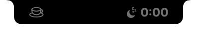
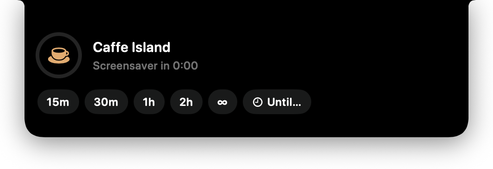
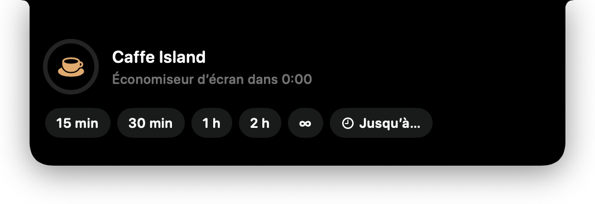
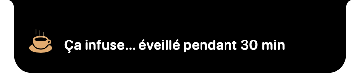
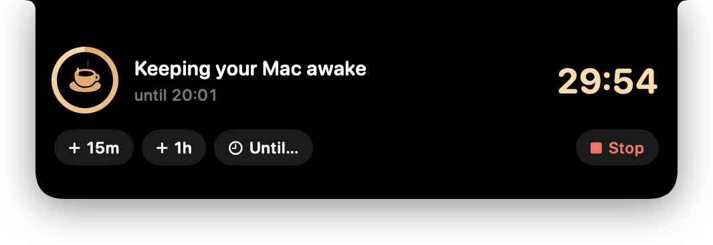
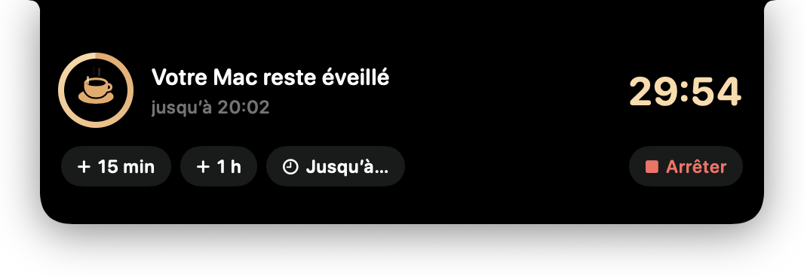
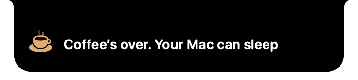
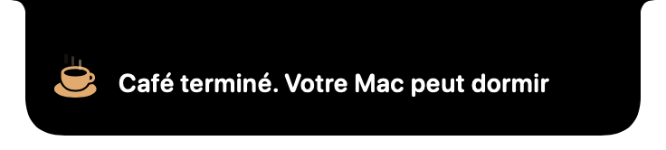
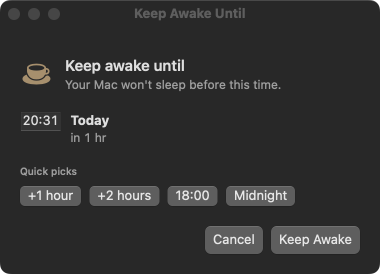
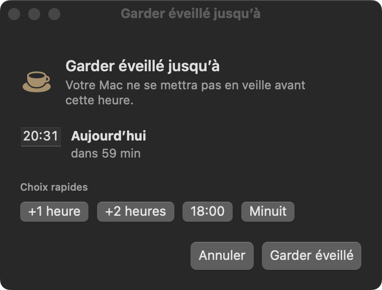

Install
Installation
- Download the latest
DynamicCaffeIsland-x.y.z.dmgfrom the project’s GitHub Releases page. - Open it and drag DynamicCaffeIsland into Applications.
- Launch it from Applications. The first time, if macOS says the developer can’t be verified, right-click the app → Open → Open.
Requires macOS 13 Ventura or later. One universal download runs natively on both Intel and Apple silicon Macs.
- Téléchargez le dernier
DynamicCaffeIsland-x.y.z.dmgdepuis la page Releases du projet sur GitHub. - Ouvrez-le et glissez DynamicCaffeIsland dans Applications.
- Lancez l’app depuis Applications. La première fois, si macOS indique que le développeur ne peut pas être vérifié : clic droit sur l’app → Ouvrir → Ouvrir.
Nécessite macOS 13 Ventura ou ultérieur. Un seul téléchargement universel, natif sur Mac Intel et Apple silicon.
Meet the island
Découvrir l’île
A small black island hangs from the top centre of your main screen. On a MacBook with a notch it wraps around the real notch; on any other Mac it simulates one. When nothing is running it quietly shows how long until the screensaver, display sleep or system sleep kicks in.
Une petite île noire est suspendue en haut au centre de votre écran principal. Sur un MacBook à encoche, elle entoure la vraie encoche ; sur les autres Mac, elle en simule une. Au repos, elle indique discrètement dans combien de temps l’économiseur d’écran, la veille de l’écran ou du Mac se déclenche.


Elsewhere on screen the island is click-through — it never blocks the menu bar or your windows.
Ailleurs à l’écran, l’île laisse passer les clics : elle ne bloque jamais la barre des menus ni vos fenêtres.
Start a session
Lancer une session
Move the pointer onto the island to open it, then pick a duration: 15m, 30m, 1h, 2h, ∞ (until you stop it) or Until….
Placez le pointeur sur l’île pour l’ouvrir, puis choisissez une durée : 15 min, 30 min, 1 h, 2 h, ∞ (jusqu’à l’arrêt) ou Jusqu’à….


A short toast confirms the start, then the island settles into a compact live timer with a progress ring.
Une courte notification confirme le démarrage, puis l’île devient un minuteur compact avec un anneau de progression.


While your Mac is awake
Pendant que le Mac reste éveillé
Hover the island again to see the end time and big countdown. + 15m and + 1h extend the session, Until… sets a new end time, and Stop ends it immediately.
Survolez de nouveau l’île pour voir l’heure de fin et le grand compte à rebours. + 15 min et + 1 h prolongent la session, Jusqu’à… fixe une nouvelle heure de fin, et Arrêter la termine immédiatement.


When the time is up (or you press Stop) the island says goodbye and your Mac goes back to its normal sleep settings.
À la fin (ou quand vous appuyez sur Arrêter), l’île vous le signale et le Mac retrouve ses réglages de veille habituels.


Until a specific time
Jusqu’à une heure précise
Choose Until… in the island (or Until a specific time… in the menu bar). Set the time with the field or a quick pick, then press Return or Keep Awake. Esc cancels.
Choisissez Jusqu’à… dans l’île (ou Jusqu’à une heure précise… dans la barre des menus). Réglez l’heure avec le champ ou un choix rapide, puis appuyez sur Retour ou Garder éveillé. Échap annule.


Spotlight, Siri & Shortcuts
Spotlight, Siri et Raccourcis
Press ⌘ Space and type an action name. The same actions are available in the Shortcuts app for your own automations.
Appuyez sur ⌘ Espace et tapez le nom d’une action. Les mêmes actions sont disponibles dans l’app Raccourcis pour vos automatisations.
| Action | Action | What it does | Effet |
|---|---|---|---|
| Keep Mac AwakeGarder le Mac éveillé | 15 min, 30 min, 1 h, 2 h or indefinitely15 min, 30 min, 1 h, 2 h ou indéfiniment | ||
| Keep Mac Awake for MinutesGarder le Mac éveillé (minutes) | Any number of minutes (1–1440)N’importe quel nombre de minutes (1 à 1440) | ||
| Keep Mac Awake UntilGarder le Mac éveillé jusqu’à | Until a time of dayJusqu’à une heure de la journée | ||
| Let Mac SleepLaisser le Mac dormir | Stops the sessionArrête la session |
With Siri, say for example “Start Dynamic Caffe Island” or “Stop Dynamic Caffe Island”.
Avec Siri, dites par exemple « Démarrer Dynamic Caffe Island » ou « Arrêter Dynamic Caffe Island ».
/Applications and has been launched once, then give Spotlight a minute to index it./Applications et qu’elle a été lancée une fois, puis laissez une minute à Spotlight pour l’indexer.Keyboard, Terminal & links
Clavier, Terminal et liens
Global shortcut
Raccourci global
⌃ ⌥ C
Toggles a 30-minute session from any app. No special permission needed.
Active ou arrête une session de 30 minutes depuis n’importe quelle app. Aucune autorisation requise.
Terminal
Terminal
caffe # 30 min
caffe 45 # 45 min
caffe on # ∞
caffe stop
caffe peekThe caffe script lives in scripts/; copy it anywhere on your PATH.
Le script caffe se trouve dans scripts/ ; copiez-le dans un dossier de votre PATH.
caffe:// links
Liens caffe://
Use them from Raycast, Alfred, scripts or a bookmark (open -g "caffe://…" in Terminal).
À utiliser depuis Raycast, Alfred, des scripts ou un signet (open -g "caffe://…" dans le Terminal).
caffe://start?minutes=45 | 45 minutes (also caffe://45)45 minutes (ou caffe://45) |
caffe://until?time=19:45 | Until 19:45 (also caffe://until/1945)Jusqu’à 19:45 (ou caffe://until/1945) |
caffe://indefinite | Until you stop itJusqu’à l’arrêt |
caffe://stop · caffe://toggle | Stop · start/stop 30 minArrêter · démarrer/arrêter 30 min |
caffe://peek · caffe://pick | Open the island · open the Until windowOuvrir l’île · ouvrir la fenêtre « Jusqu’à » |
Languages
Langues
The app is available in English and French and follows your Mac’s language. To use a different language just for this app: System Settings › General › Language & Region › Applications. Want to add your language? See the localization guide.
L’app est disponible en anglais et en français et suit la langue de votre Mac. Pour choisir une autre langue pour cette app uniquement : Réglages Système › Général › Langue et région › Apps. Envie d’ajouter votre langue ? Consultez le guide de localisation.
Privacy & permissions
Confidentialité et autorisations
- No network access, no analytics, no account. Nothing leaves your Mac.
- No special permissions — no Accessibility, no Screen Recording. The island only follows the pointer position to know when to open.
- Keeping awake uses the same system mechanism as Apple’s
caffeinate. You can verify it in Terminal withpmset -g assertions. - Other apps and links can send
caffe://commands (that’s what makes automation work). Every start is announced in the island, timed commands are capped at 24 hours, and Stop or quitting always ends it.
- Aucun accès réseau, aucune statistique, aucun compte. Rien ne quitte votre Mac.
- Aucune autorisation particulière : ni Accessibilité, ni Enregistrement de l’écran. L’île suit seulement la position du pointeur pour savoir quand s’ouvrir.
- Le maintien en éveil utilise le même mécanisme système que
caffeinated’Apple. Vérifiez-le dans le Terminal avecpmset -g assertions. - D’autres apps et des liens peuvent envoyer des commandes
caffe://(c’est ce qui permet l’automatisation). Chaque démarrage est annoncé dans l’île, les commandes minutées sont plafonnées à 24 heures, et Arrêter ou quitter l’app y met toujours fin.
Troubleshooting
Dépannage
My Mac slept anyway with the lid closed
Closing a MacBook lid without an external display always sleeps the Mac; keep-awake prevents idle sleep only.
I don’t see the island
It appears on the main display (the one with the menu bar). Check the app is running — the cup icon is in the menu bar.
Stop everything
Press Stop, run caffe stop, or quit the app: quitting always releases the keep-awake.
Mon Mac s’est quand même mis en veille capot fermé
Fermer l’écran d’un MacBook sans moniteur externe met toujours le Mac en veille ; l’app n’empêche que la veille par inactivité.
Je ne vois pas l’île
Elle s’affiche sur l’écran principal (celui qui porte la barre des menus). Vérifiez que l’app tourne : l’icône de tasse est dans la barre des menus.
Tout arrêter
Appuyez sur Arrêter, lancez caffe stop ou quittez l’app : quitter libère toujours le maintien en éveil.